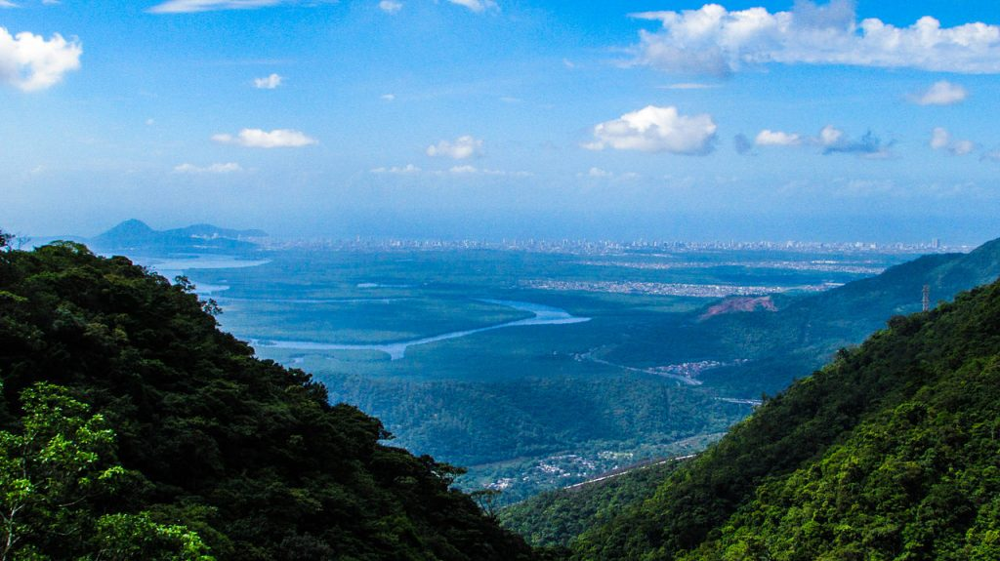
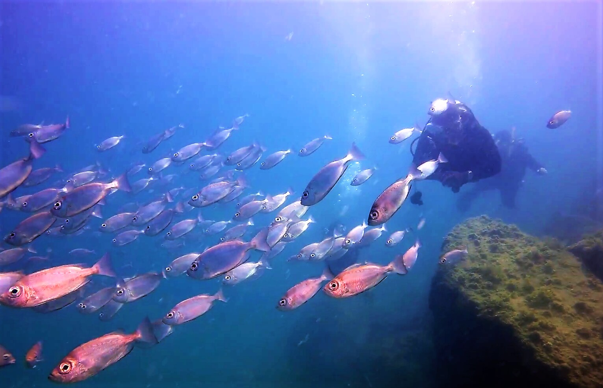

Alter do Chão (Pará)
Alter do Chão é conhecida como o “Caribe da Amazônia” e foi considerada pelo jornal “The Guardian” a
praia mais bonita do Brasil. Nada mal! Ela é única porque marca o encontro das águas cristalinas do
Rio
Patajós com as águas barrentas do Rio Amazonas.
Tenho interesse
Jericoacoara (Ceará)
Jericoacoara, carinhosamente conhecida como Jeri, é uma pérola no litoral do Ceará, um destino que se
tornou sinônimo de beleza e encantamento natural. Famosa mundialmente, Jeri é frequentemente citada
em
guias de turismo e listas das praias mais exuberantes do Brasil e do globo, e não é à toa.
Tenho interesse
Praia do Espelho (Bahia)
A Praia do Espelho, famosa pelas suas piscinas naturais que refletem o céu azul como espelhos, é uma
das
melhores praias de Trancoso. Essa característica única dá nome a esta praia encantadora e
proporciona um
espetáculo visual inesquecível, tornando essencial a consulta da Tábua da Maré para planejar sua
visita
no momento perfeito.
Tenho interesse
Pico Agudo
Rampa para Voo Livre, Pico Agudo localizado na cidade de Santo Antônio do Pinhal, o visitante curte a
natureza, se deslumbra com a vista e ainda tem a possibilidade de fazer um voo duplo de paraglider
ou
parapente. Venha vivenciar esta emoção. O Voo duplo dura de 22 a 45 minutos e pode ser feito em
qualquer
época do ano.
Tenho interesse
Pico do Jaraguá
Se você está em busca de uma experiência emocionante e capaz de te deixar sem fôlego, que tal fazer
uma
visita ao Pico do Itapeva, na região da nossa Campos do Jordão? Este pode ser o passeio ideal para
fazer
durante sua viagem, seja ela entre amigos ou até mesmo com a sua outra cara-metade!
Tenho interesse

Serra do Mar
A Serra do Mar é uma região montanhosa que se estende por aproximadamente 1.500 quilômetros, ao longo
do
litoral do Sudeste e Sul do Brasil, de Santa Catarina ao Rio de Janeiro. No Rio de Janeiro, estão
localizados alguns dos picos mais altos da serra
Tenho interesse

Naufrágios em Recife (PE)
Conhecida como a Veneza Brasileira desde que o escritor francês Albert Camus esteve por lá, na década
de
40, e a comparou com a cidade italiana pelos vários rios, pontes, ilhéus e penínsulas, Recife é um
dos
destinos preferidos dos mergulhadores.
Tenho interesse

Arraial do Cabo (RJ)
Pode ser até clichê, mas Arraial do Cabo faz mesmo jus à fama de capital brasileira do mergulho.
Mergulhar em Arraial do Cabo, de snorkel ou cilindro, é vivenciar uma experiência incrível. O mar de
águas claras e transparentes é um convite para testemunhar um verdadeiro espetáculo da vida marinha.
Tenho interesse
Bombinhas (SC)
A beleza é exuberante na única península do Sul do país. Mesmo sendo a menor cidade de Santa
Catarina,
Bombinhas se destaca pelo litoral recortado, que dá origem a inúmeras praias, inclusive algumas das
mais
belas do país.
Tenho interesse